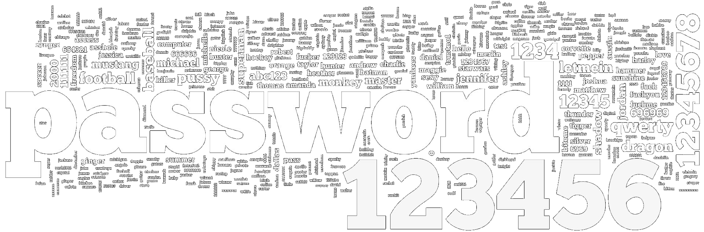

Password strength checking and passsword creation advice and guidance for creating stronger, more secure passwords.
Commonly used passwords. Source: https://www.wernjie.com/most-common-passwords/
Password Strength Tester
Hue Lights Key
Secure Pass is designed to reflect the layout of the Phillips Hue Lights in Smeaton Lab 109 at the University of Plymouth. Each requirement has a symbol next to it, either a cross or a tick which signify whether or not the relevant requirement has been met or not. When a requirement is not met (and has a red cross next to it), the light in the same position on the wall will be red. When a requirement is met, the cross will become a green tick and the light in the same position will turn green. The two by three requirements grid makes understanding which light matches which requirement very easy.
About Secure Pass
Why do you need a strong password?
As our reliance on technology continues to grow, so does the amount of data we need to store digitally. Therefore it is vital that the data remains secure and can only be accessed by the people who should be able to access it. Passwords remain at the forefront of access control yet people are not made aware of the importance of strong passwords. Secure Pass aims to provide guidance on creating stronger passwords without the risk of creating ones that are too complex, which often lead to more vulnerability from people from things such as writing them down on paper or the frustration of not being able to remember then leading to opt for an easy one.
How Secure Pass aims to help.
Stronger passwords utilise different character cases (upper and lower), numbers, symbols and length. Secure Pass checks your inputted password contains all of these as well as being 9 or more characters long and doesn't contain the word "Password" which is frequently one of the most common passwords used. By putting all these different things together, your passwords will be more secure from password cracking tools that are used to gain unauthorised access to accounts.
DISCLAIMER
Secure Pass does not guarantee that your password cannot be cracked through software. Rather, it aims to guide you to create passwords which are more complex to be broken. Do not enter the password are planning on using, instead opt for one that is similar. This is to prevent any potential malware from gaining a copy of a password you intend to use.